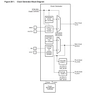

To go beyond simple inputs and outputs on GPIO we will need to choose a clock source and set it as our main clock. Clock setting information is in chapter 28 in the datasheet, but the clock generator registers are in the next chapter, Power Management Control (PMC). There are many clock generators to choose from:
We can use these clock generators for the following clocks:
From this list of clocks we can set a 'master clock', which is the clock that the peripherals like SPI, USART/UART, i2c will use. We need to set the master clock before we can enable peripheral clocks.
Clock generator block diagram from the datasheet:
The main clock defaults to using the embedded RC oscillator running at 4MHz. This embedded oscillator is convenient to use, but if you want to go faster or more accurate then we will need to provide a crystal oscillator.
On our dev board we have a 20MHz crystal on Xin and Xout and we will be choosing that for our main clock (MAINCK).
To set the main clock to use our external crystal we have to go through the following steps:
void clock_init(){ //enable external crystal REG_CKGR_MOR |= CKGR_MOR_KEY_PASSWD | CKGR_MOR_MOSCXTEN; //wait for crystal to become ready while (!(REG_PMC_SR & PMC_SR_MOSCXTS)); //select crystal for main clock REG_CKGR_MOR |= CKGR_MOR_KEY_PASSWD | CKGR_MOR_MOSCSEL; //master clock source selection - choose main clock REG_PMC_MCKR |= PMC_MCKR_CSS_MAIN_CLK //wait until main clock ready while (!(EG_PMC_SR & PMC_SR_MCKRDY)); //select processer prescaler (0 - no divisor) REG_PMC_MCKR |= PMC_MCKR_PRES_CLK_1; //select processer prescaler (div 4) 20mhz/4 = 5mhz //REG_PMC_MCKR |= PMC_MCKR_PRES_CLK_4; //wait until main clock ready while (!(REG_PMC_SR & PMC_SR_MCKRDY)); } //after setting up clock you can enable peripheral clocks in the PMC int main(void){ /* Initialize the SAM system */ SystemInit(); clock_init(); /* Replace with your application code */ while (1) { } }
The fast clock pins connect to a crystal with frequency between 3 and 20 MHz. The datasheet says that the ATSAM4S can go up to 120 MHz, so how do we do this? We can something called the PLLA or PLLB clock. The PLL Clocks take input from the main clock and divide by a value (1-255) and then multiply that value (7-62)+1. Then we set the master clock to use the PLLA or PLLB clock which the peripherals use.
Here is an example of setting up the PLLB clock to generate the frequency of 50 MHz
//20MHz / 4 = 5MHz, 5MHz * (9+1) = 50MHz REG_CKGR_PLLBR |= CKGR_PLLBR_MULB(9); REG_CKGR_PLLBR |= CKGR_PLLBR_DIVB(4); //select PLLB as the master clock //master clock source selection - choose main clock REG_PMC_MCKR |= PMC_MCKR_CSS_PLLB_CLK;
{kind=link}